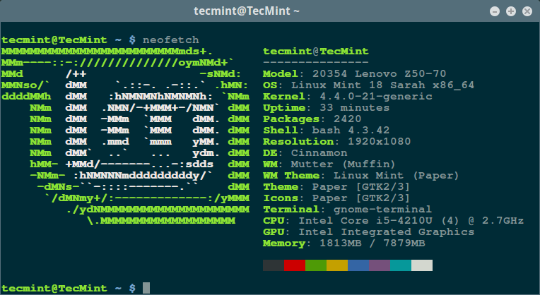
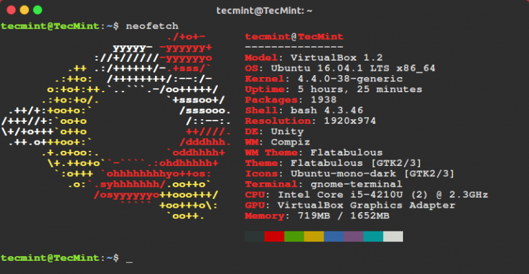
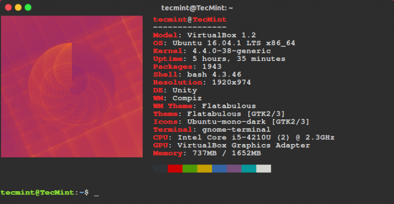

Neofetch - информация о системе linux и логотип в терминале
Программы Ноябрь 14, 2016 5 admin
Neofetch - это очень простая в использовании и кроссплатформенная утилита которая позволяет отображать информацию о системе в терминале, рядом с красивой картинкой. В качестве картинки можно использовать логотип вашего дистрибутива или любую другую картинку.
Эта утилита очень похожа на ScreenFetch или LinuxLogo, но она более настраиваемая и гибкая, а также содержит некоторые дополнительные функции. Она очень быстрая, выводит изображение в формате ASCII рядом с системной информацией, а также может сделать снимок экрана после завершения работы скрипта.
Bash 3.0+ и поддержка \033[14t обязательна, но эту возможность поддерживают большинство терминалов, что касается всего остального, то эти зависимости нужны для дополнительных функций.
Информация о системе linux при запуске терминала, это не только красиво, но и временами может быть очень полезно. Установить утилиту можно из сторонних репозиториев практически в любом дистрибутиве Linux. Дальше мы рассмотрим инструкции для самых популярных из них.
echo "deb http://dl.bintray.com/dawidd6/neofetch jessie main" | sudo tee -a /etc/apt/sources.list
$ curl -L "https://bintray.com/user/downloadSubjectPublicKey?username=bintray" -o Release-neofetch.key && sudo apt-key add Release-neofetch.key && rm Release-neofetch.key
$ sudo apt-get update
$ sudo apt-get install neofetch
sudo add-apt-repository ppa:dawidd0811/neofetch
$ sudo apt-get update
$ sudo apt-get install neofetch
Сначала необходимо установить пакет плагинов dnf-plugins-core:
sudo yum install dnf-plugins-core
Затем добавьте репозиторий и установите от туда neofetch:
sudo dnf copr enable konimex/neofetch
$ sudo dnf install neofetch
Вы можете установить версии neofetch или neofetch-git из репозитория AUR с помощью packer или yaourt:
packer -S neofetch
$ packer -S neofetch-git
Или:
yaourt -S neofetch
$ yaourt -S neofetch-git
sudo emerge app-misc/neofetch
Использование Neofetch в Linux
Чтобы вывести информацию о системе и лого достаточно выполнить одну команду:
Обратите внимание, если w3m-img или imagemagick не установлены в вашей системе, по умолчанию будет использован screenfetch и neofetch отобразит логотип linux в виде ASCI.


Если вы все-таки хотите отобразить логотип дистрибутива linux в виде обычной картинки, нужно установить w3m-img или imagemagick в вашей системе. В Ubuntu:
sudo apt-get install w3m-img
В Red Hat / Fedora:
sudo yum install w3m-img
Затем запустите утилиту еще раз, вы увидите изображение обоев рабочего стола по умолчанию в виде обычного изображения:
neofetch

После первого запуска утилита создаст конфигурационный файл со своими настройками по адресу ~/.config/neofetch/config. Этот файл содержит функцию printinfo(), которая позволяет настроить информацию о системе, которую следует выводить. Вы можете удалить ненужные строки, добавить новые или изменить их. Чтобы открыть конфигурационный файл выполните:
vi ~/.config/neofetch/config
Содержимое файла будет выглядеть примерно вот так:
!/usr/bin/env bash
# vim:fdm=marker
#
# Neofetch config file
# https://github.com/dylanaraps/neofetch
# Speed up script by not using unicode
export LC_ALL=C
export LANG=C
# Info Options {{{
# Info
# See this wiki page for more info:
# https://github.com/dylanaraps/neofetch/wiki/Customizing-Info
printinfo() {
info title
info underline
info "Model" model
info "OS" distro
info "Kernel" kernel
info "Uptime" uptime
info "Packages" packages
info "Shell" shell
info "Resolution" resolution
info "DE" de
info "WM" wm
info "WM Theme" wmtheme
info "Theme" theme
info "Icons" icons
info "Terminal" term
info "Terminal Font" termfont
info "CPU" cpu
info "GPU" gpu
info "Memory" memory
# info "CPU Usage" cpu_usage
# info "Disk" disk
# info "Battery" battery
# info "Font" font
# info "Song" song
# info "Local IP" localip
# info "Public IP" publicip
# info "Users" users
# info "Birthday" birthday
info linebreak
info cols
info linebreak
}
Чтобы узнать все доступные опции утилиты, а также параметры настройки выполните такую команду:
neofetch --help
Для проверки правильности всех настроек в файле конфигурации выполните:
neofetch --test
С помощью флага --ascii вы можете указать, что логотип дистрибутива нужно рисовать в текстовом формате:
neofetch --ascii
Вы можете запускать утилиту при каждом запуске терминала, просто добавив строчку запуска в конец ~/.bashrc:
vi ~/.bashrc
...
neofetch
В этой статье мы рассмотрели простую и очень настраиваемую утилиту командной строки, с помощью которой может быть выведена информация о системе linux и логотип дистрибутива в терминал. Вы используете подобные утилиты? Будете использовать? Напишите в комментариях!